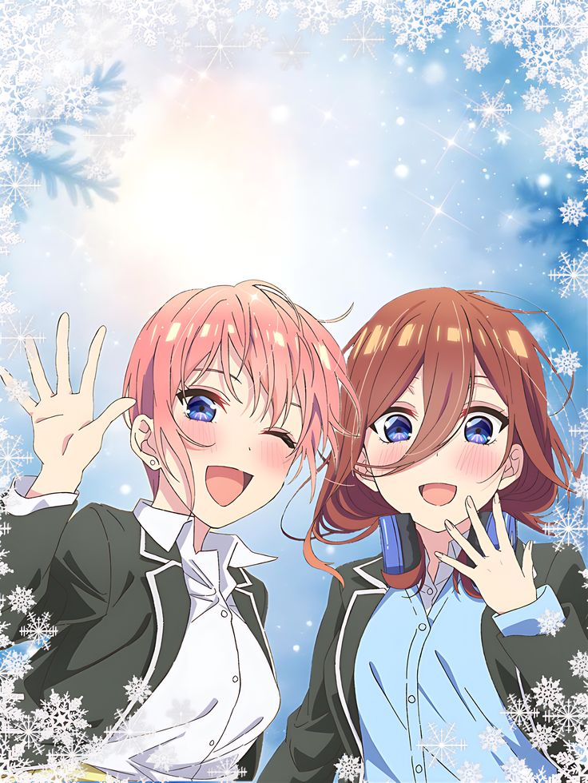

El núcleo narrativo y temático de la obra descansa en la compleja dinámica de las hermanas quintillizas Nakano. Aunque biológicamente idénticas y dotadas del mismo rostro característico, cada una representa una faceta psicológica, emocional y vocacional totalmente diferenciada. A lo largo del relato, la interacción entre ellas y con su tutor privado permite explorar arcos de crecimiento personal marcados por la superación de sus propias barreras cognitivas y afectivas.
Ichika (一花) es la primogénita de las quintillizas y quien suele asumir formalmente el rol de líder del grupo familiar. Tras el temprano fallecimiento de su madre biológica, Rena Nakano, Ichika adoptó de manera inconsciente el rol de madre sustituta para sus hermanas menores, lo que consolidó en ella una personalidad madura, serena, bromista y profundamente sobreprotectora (Haruba, 2018).
En el ámbito vocacional, Ichika es una talentosa actriz en ascenso, trabajando incansablemente en audiciones, comerciales y series de televisión. Este anhelo artístico, si bien representa su gran pasión, pone en constante riesgo su rendimiento en los estudios escolares y genera el conflicto central de su evolución: la dificultad de conciliar su carrera profesional con el florecimiento de sus sentimientos hacia Fuutarou Uesugi. Aunque aparenta ser la más despreocupada e independiente de las cinco, carga en silencio con una pesada responsabilidad y una constante predisposición a sacrificarse por el bienestar de sus hermanas, limitación emocional que Fuutarou la ayuda a superar al enseñarle a luchar legítimamente por su propia felicidad (Haruba, 2018).
Su peinado con el cabello recogido hacia un lado y su lazo característico la hacen la más fácil de distinguir visualmente. En el arco del festival escolar del amanecer, Ichika toma la decisión más difícil de todas: renunciar a su propia oportunidad romántica para proteger a sus hermanas, un momento que la crítica considera el cierre maduro de su personaje (Haruba, 2020).
Nino (二乃) es la segunda de las hermanas y se desempeña, en la práctica cotidiana del hogar, como el pilar protector del grupo. Es la encargada principal de preparar la comida, gestionar las labores domésticas y velar celosamente por la seguridad e integridad emocional de sus cuatro hermanas. De carácter enérgico, sumamente directo, apasionado y en ocasiones terco, Nino destaca por su refinado sentido de la moda, su estética cuidada y sus extraordinarias habilidades para la repostería (Haruba, 2018).
Al comienzo del relato, Nino se perfila como la opositora más hostil e implacable hacia Fuutarou, considerándolo un intruso peligroso que amenaza con fragmentar la unión exclusiva de las quintillizas, llegando incluso a sabotear activamente sus primeras jornadas pedagógicas. Sin embargo, su posterior evolución emocional es una de las más elogiadas y complejas de la serie: al comprender la dedicación desinteresada del tutor, Nino experimenta una transformación radical hacia una determinación afectiva frontal y sincera. Su célebre confesión amorosa en el capítulo 59 fue proclamada por los seguidores de la obra como uno de los momentos más icónicos en la historia del manga según encuestas oficiales (Oricon, 2020).
Su diseño —dos cintas en forma de mariposa en el cabello— refleja su evolución: las mariposas, símbolo de transformación, acompañan su paso de enemiga declarada a la más honesta emocionalmente de todas las hermanas (MyAnimeList, 2021).
Miku (三玖) es la tercera de las quintillizas: una joven tímida, de hablar pausado, expresión serena y porte reservado que habitualmente lleva puestos un par de auriculares sobre el cuello como rasgo identitario distintivo. A pesar de su apariencia introvertida e insegura, posee una intensa vida interior y una sensibilidad sumamente aguda. Su mayor pasión privada es el estudio exhaustivo de la historia militar japonesa, en especial de los célebres señores feudales y tácticos del período Sengoku, tales como Takeda Shingen y Uesugi Kenshin (Haruba, 2018).
Fuutarou logra entablar el primer vínculo de confianza con ella al validar y compartir dicho interés histórico, lo que convierte a Miku en la primera de las cinco hermanas en aceptar sus enseñanzas y en reconocer internamente sus sentimientos hacia él. Su trayectoria se fundamenta en la búsqueda de la autoconfianza: Miku se esfuerza denodadamente por mejorar sus destrezas culinarias, superar su baja autoestima y aprender a expresar abiertamente sus emociones frente al mundo, consolidándose como uno de los pilares emocionales más entrañables para la audiencia (Haruba, 2018).
Sus auriculares sobre las orejas son su seña de identidad: con ellos puestos se aísla del mundo, y quitárselos ante Fuutarou se convierte en un gesto simbólico de apertura emocional que la obra repite con maestría narrativa (Anime News Network, 2019).
Yotsuba (四葉) es la cuarta hermana, reconocible al instante por su cinta verde en forma de orejas de conejo y su inagotable energía vital. Caracterizada por una personalidad alegre, extrovertida, atlética y sumamente servicial, Yotsuba participa activamente en múltiples clubes deportivos escolares y jamás duda en prestar auxilio a quien lo necesite, aun a costa de su propio agotamiento físico o de descuidar sus compromisos académicos (Haruba, 2020).
Bajo su aparente ingenuidad y permanente sonrisa se oculta un pasado cargado de un profundo complejo de culpa. Durante su infancia temprana, su deseo inicial por destacar individualmente derivó en una serie de acontecimientos que comprometieron la permanencia escolar de sus hermanas, provocando que adoptara una postura de sumisión absoluta en la que reprimía sistemáticamente sus propios anhelos para anteponer siempre a los demás. Su relación con Fuutarou Uesugi posee un peso determinante en la trama general, revelando una conexión íntima gestada años atrás durante un viaje infantil a Kioto que definió el destino de ambos (Haruba, 2020).
Su cinta de lazo verde y su energía desbordante ocultan la trama más importante de la serie: es la niña que Fuutarou conoció en Kioto cinco años atrás, el motor oculto de toda la historia desde el primer capítulo (Haruba, 2019).
Itsuki (五月) es la menor de las quintillizas y el primer contacto que Fuutarou establece en la escuela. De porte formal, seriedad innata, rectitud moral y un orgullo notable, Itsuki persigue tenazmente la meta de formarse como profesora profesional de educación secundaria, siguiendo la vocación docente de su difunta madre. Posee una notable disciplina para el estudio teórico, aunque sus nervios y rigidez cognitiva a menudo dificultan su rendimiento en evaluaciones bajo presión (Haruba, 2019).
Entre sus rasgos más entrañables destaca su inmenso apetito y su hábito de buscar consuelo en la comida cuando atraviesa crisis emocionales o momentos de gran tensión. Al ser la hermana con mayor parecido fisonómico y conductual con Rena Nakano, su proceso de asimilación del duelo resulta especialmente doloroso, desempeñando un rol clave como confidente y baluarte moral tanto para sus hermanas como para el propio Fuutarou (Haruba, 2019).
Sus dos horquillas con forma de estrella son su distintivo. Curiosamente, es la única que posee un amuleto idéntico al que la niña de Kioto le dio a Fuutarou, lo que durante gran parte de la obra alimentó las teorías de los fans sobre la identidad de la novia (MyAnimeList, 2021).
Fuutarou Uesugi encarna la figura del antihéroe pragmático: un estudiante dotado de una brillantez intelectual sobresaliente, pero condicionado por una extrema torpeza social, un carácter tosco y una visión estrictamente utilitaria de las relaciones humanas al inicio de la trama. Huérfano de madre desde la niñez, vive consagrado a proteger a su pequeña hermana Raiha y a subsanar la precaria economía doméstica originada por las deudas acumuladas de su padre, Isanari Uesugi (Haruba, 2017).
El núcleo de la historia radica en su progresiva humanización: a través del contacto cotidiano con las quintillizas, Fuutarou aprende a escuchar activamente, a interpretar la fragilidad humana y a comprender que el verdadero valor de la vida no reside exclusivamente en la acumulación de conocimientos o calificaciones perfectas, sino en la capacidad de construir lazos fraternales y afectivos recíprocos. La figura paterna de las chicas, Maruo Nakano, impone un constante marco de exigencia y fiscalización profesional sobre el tutorado, mientras que el recuerdo imperecedero de la madre biológica, Rena Nakano, actúa como una fuerza tutelar que une el destino de todos los personajes (Haruba, 2017; Haruba, 2020).
El éxito arrollador de los personajes en la adaptación televisiva al anime se vio respaldado por una selección de doblaje japonés (seiyuus) de primer orden en la industria del entretenimiento nipón. El papel protagónico masculino de Fuutarou Uesugi fue interpretado con maestría por Yoshitsugu Matsuoka, reconocido ampliamente por imprimir intensidad dramática y matices cómicos a sus interpretaciones. Por su parte, el elenco que dio vida a las cinco hermanas estuvo conformado por actrices consagradas: Kana Hanazawa prestando su cálida voz a Ichika, Ayana Taketatsu brindando la pasión vibrante de Nino, Miku Itō transmitiendo la delicada timidez de Miku, Ayane Sakura encarnando la luminosidad de Yotsuba, e Inori Minase dotando de solemnidad y ternura a Itsuki (Crunchyroll, 2018).
Un antecedente sumamente singular de esta producción ocurrió durante la campaña publicitaria inicial de Kodansha para el manga en el año 2017: en dicho comercial promocional preliminar, la actriz Ayane Sakura asumió el desafío de interpretar simultáneamente a las cinco hermanas en una misma secuencia, poniendo de manifiesto la sutileza tonal requerida para distinguir la esencia de cada quintilliza a partir de una misma base sonora (Crunchyroll, 2018).
Como las quintillizas comparten rostro, la obra ofrece un código visual que el espectador aprende en los primeros episodios: Ichika lleva el cabello recogido con un lazo lateral y un solo pendiente; Nino luce dos cintas mariposa y cabello largo suelto; Miku cubre sus orejas con grandes auriculares; Yotsuba ata una cinta de lazo verde con cuatro puntas; e Itsuki usa dos horquillas en forma de estrella (Anime News Network, 2019).
Cada color y accesorio fue elegido para reflejar la personalidad: el verde de Yotsuba evoca naturaleza y deporte; el azul de Miku, calma y reserva; las mariposas de Nino, transformación; el lazo elegante de Ichika, madurez; y las estrellas de Itsuki, aspiración y guía. Cuando las hermanas intercambian accesorios para confundir a Fuutarou, el juego visual se convierte en parte del argumento (Sitio oficial de la película, 2022).